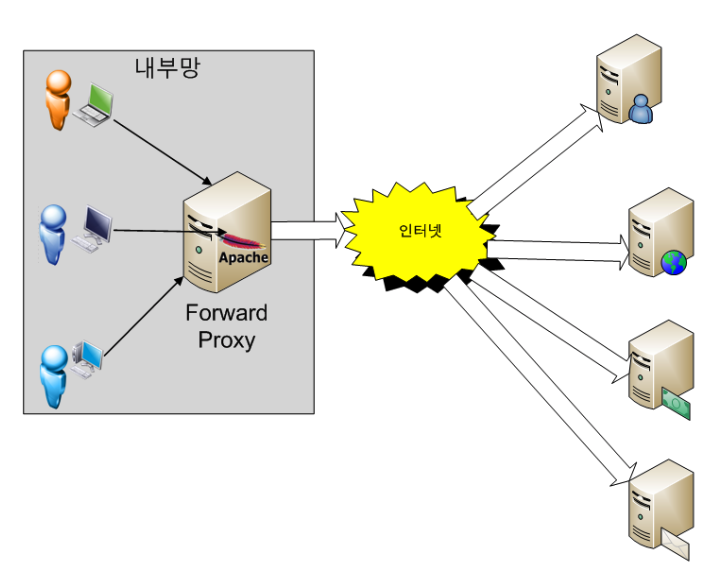
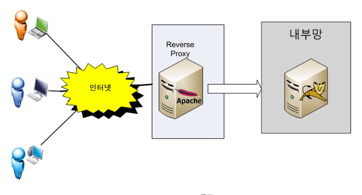

03. Network
다이제스트 (Digest)
과거에 DB 에 저장되어 있는 비밀번호와 사용자가 입력한 값을 직접 비교하는 프로세스가 일반적이였으나 보안이슈로 인하여 사용자의 비밀번호를 암호화하는 대표적인 방법으로 암호화 해시 함수 (Cryptographic Hash Function) 가 있다.
일반적으로 사용자가 입력한 비밀번호는 암호화 해시 함수를 거쳐 다이제스트 (Digest) 형태로 저장된다.
다이제스트 (Digest) 란 해시 함수라는 수학적인 연산을 통해 암호화된 메시지를 의미한다.
암호화 해시 함수의 특징은 단방향 이라서 역으로 추적이 거의 불가능하다.
대표적인 해시 함수는 MD5 SHA-1 SHA-256 등이 있다.
참고자료
TCP/UDP 포트 목록
기본적으로 권고되는 기본포트는 다음과 같으며 이는 IANA 의 권고안으로 구성된다.
자주 사용되는 포트는 다음과 같다.
| PORT | 설명 | TCP | UDP |
|---|---|---|---|
| 20 | FTP (파일 전송 프로토콜) - 데이터 포트 | O | |
| 21 | FTP - 제어포트 | O | |
| 22 | SSH (다른 FTP 프로그램의 의해서 SFTP의 기본 포트로 설정되는 경우가 있어 충돌이 난다) | O | |
| 23 | Telnet | O | |
| 25 | SMTP - 이메일 전송에 사용 | O | |
| 80 | HTTP - 웹 페이지 전송 | O | |
| 443 | HTTPS - SSL 위의 HTTP의 암호화 전송 | O | |
| 990 | SSL 위의 FTP의 암호화 전송 | O |
네트워크 스위치 (NetWork Switch)
| Switch | 기능 |
|---|---|
| L2 | MAC Address 를 읽어 스위칭 작업을 한다. 라우팅이 불가능 하다. |
| L3 | IP 정보를 읽어 스위칭을 한다. |
| L4 | Port 번호 (TCP / UDP) 를 보고 스위칭을 한다. HTTP : 80 HTTPS : 444 FTP : 21, 22 |
| L7 | 어플리케이션 경로를 보고 스위칭을 한다. (도메인 이후 경로) |
각 스위치 장비는 자기보다 낮은 스위치의 기능까지 소화가 가능하다. (L7은 L4, L3, L2 영역까지 커버 가능)
가상 네트워크 (virtual Network)
Virtual Box, VM Ware 같은 가상머신 프로그램을 이용하여 Host (로컬 PC) 내에 가상 네트워크를 구성할 수 있다.
구성 가능한 가상 네트워크의 종류는 다음과 같다.

Host-Only
- 외부와 단절된 내부 네트워크를 구축하는 것
- 구성된 가상머신들끼리만 통신이 가능
NAT (Network Address Translation)
- Host PC 로부터 IP를 할당받아 가상머신 프로그램이 자체 DHCP 서버를 띄워 내부 네트워크 대역 할당 및 통신을 한다.
- Host PC 를 통해 외부 네트워크와 통신이 가능하다.
Bridge
- 공유기로부터 IP 를 할당 받아 호스트와 동일한 네트워크 대역의 IP 를 갖게 된다.
- 공유기를 통해 외부 네트워크와 통신이 가능하다.
참고자료
DHCP (Dynamic Host Configuration Protocal) 서버
Host PC 에서 보유하고 있는 IP 를 유동적으로 관리하는 프로토콜이다.
IP 자동 할당과 분배의 기능을 담당한다.
프록시 환경 (Proxy) 환경
프록시 서버 (Proxy Server) 란 중계서버 이다.
순방향 프록시 (Forward Proxy)
- 내부에서 외부로 접근
- Proxy Server 에서 IN/OUT 바운드 패킷에 대한 보안정책 (Content Filtering) 을 적용할 수 있다.
- Proxy Server 내부에 Cache 를 유지하며 이미 한번 통신한 외부 서버의 이미지, 파일, 그 외정보들을 저장할 수 있다.
- Cache 용도로 사용한다.

역방향 프록시 (Reverse Proxy)
- 외부에서 내부로 접근
- 외부 사용자는 내부망에 대한 서버의 존재를 모르기 때문에 Reverse Proxy 서버에 들어오는 모든 접속은 Reverse Proxy 에 매핑되는 내부 서버의 정보를 알고 요청을 넘겨준다.
- Proxy 서버가 내부 서버의 정보를 알고 있으므로 로드 밸런싱을 통해 부하 여부에 따라 요청을 분배할 수 있다.

대부분 nginx 와 같은 Web Server 에서 설정한다.
참고자료
https://medium.com/sjk5766/nginx-reverse-proxy-사용하기-e11e18fcf843